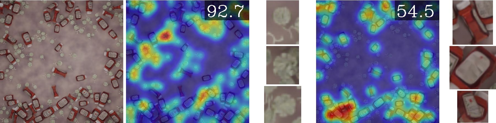
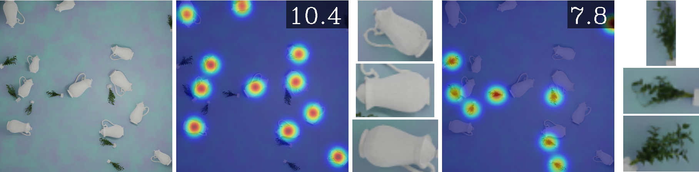
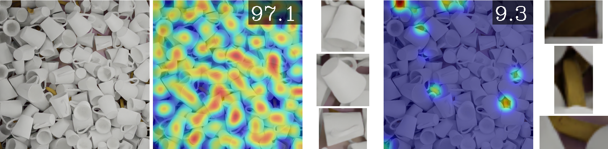
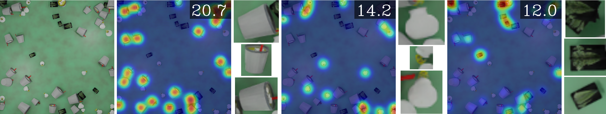
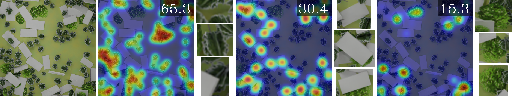

ABC Easy as 123: A Blind Counter for Exemplar-Free
Multi-Class Class-agnostic Counting
ABC123
Class-agnostic counting methods enumerate objects of an arbitrary class, providing tremendous utility in many
fields.
Prior works have limited usefulness as they require either a set of examples of the type to be counted or that the
query image contains only a single type of object. A significant factor in these shortcomings is the lack of a
dataset to properly address counting in settings with more than one kind of object present.
To address these issues, we propose the first Multi-class, Class-Agnostic Counting dataset (MCAC) and A Blind
Counter (ABC123), a method that can count multiple types of objects simultaneously without using examples of type
during training or inference.
ABC123 introduces a new paradigm where instead of requiring exemplars to guide the enumeration, examples are found
after the counting stage to help a user understand the generated outputs.
We show that ABC123 outperforms contemporary methods on MCAC without needing human in-the-loop annotations. We
also show that this performance transfers to FSC-147, the standard class-agnostic counting dataset.




 ABC123 enumerates instances of multiple types of objects simultaneously without needing exemplar images. Not only does ABC123 not require exemplar images, it finds examples of type to aid a user in understanding the types it has counted.
MCAC
MCAC is the first multi-class class-agnostic counting dataset. For details on MCAC see its project page.
Benchmark Results
| Val | Test | ||||||||
| Method | Shots | MAE | RMSE | NAE | SRE | MAE | RMSE | NAE | SRE |
| Mean | N/A | 39.87 | 53.56 | 3.07 | 11.40 | 42.67 | 59.68 | 2.79 | 10.93 |
| Median | N/A | 36.25 | 58.15 | 1.51 | 6.70 | 39.81 | 65.36 | 1.38 | 6.73 |
| FamNet | 3 | 24.76 | 41.12 | 1.12 | 6.86 | 26.40 | 45.52 | 1.04 | 6.87 |
| BMNet | 3 | 15.83 | 27.07 | 0.71 | 4.97 | 17.29 | 29.83 | 0.75 | 6.08 |
| CounTR | 3 | 15.07 | 26.26 | 0.63 | 4.79 | 16.12 | 29.28 | 0.67 | 5.71 |
| ABC123 | 0 | 8.96 | 15.93 | 0.29 | 2.02 | 9.52 | 17.64 | 0.28 | 2.23 |
Citation
@article{hobley2023abc,
title={ABC Easy as 123: A Blind Counter for Exemplar-Free Multi-Class Class-agnostic Counting},
author={Hobley, Michael and Prisacariu, Victor},
journal={Proceedings of the European Conference on Computer Vision},
year={2024}}